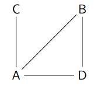
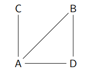
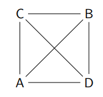
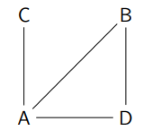
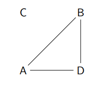

Sommaire
Rappels eulériens
- Parcours eulérien : passe une seule fois par chaque arête.
- Cycle eulérien : parcours eulérien qui revient au sommet de départ.
Théorème d’Euler :
- Graphe connexe avec parcours eulérien ⇔ tous les sommets sont de degré pair sauf éventuellement deux.
- Graphe connexe avec cycle eulérien ⇔ tous les sommets de degré pair.
Test de sociométrie
- Moreno & Jennings — n=505 enfants éloignés des parents.
- Questions : « Avec qui voudrais-tu/ ne voudrais-tu pas habiter ? »
- Résultats : popularité, réciprocités (dyades/triades/cercles), minorité de choix réciproques, transgressions d’ordre social.
- PS : Moreno & Jennings SONT DES PSYCHOLOGUES !!!!
Définition & apports de la théorie des graphes
Définition : discipline mathématique et informatique étudiant les graphes, modèles abstraits de réseaux reliant des objets.
Apports : visualiser les réseaux, révéler des propriétés structurales, proposer des concepts/mesures ; applicable à des réseaux très hétérogènes (amitiés, livres, citations, Internet…).
Vocabulaire de base
- Sommet : individu/entité. Un graphe d’ordre n possède n sommets.
- Arête : relation non orientée entre deux sommets.
- Arc : relation orientée entre deux sommets.
- Un graphe est signé si on peut affecter un signe positif ou négatif à chaque arête ou arc.
- Un graphe est valué si on peut affecter une valeur à chaque arête ou arc.
Types de réseaux
Réseau complet : tous les acteurs identifiés, toutes les données collectables (ex. organisation de travail).
Réseau personnel (égocentré) : centré sur un individu/organisation ; utile si l’ensemble des acteurs n’est pas connu ; fusion possible de plusieurs réseaux égo-centrés.
Notions structurales
- Un graphe est valué si on peut affecter une valeur à chaque arête ou arc.
- ▶A est un sommet de degré 3
- ▶B est un sommet de degré 2
- ▶C est un sommet de degré 1
- ▶D est un sommet de degré 2
- Dans le cas de graphe orienté :
- ▶ Le demi-degré extérieur d’un sommet correspond au nombre
d’arcs qui en partent.
- ▶ Le demi-degré intérieur d’un sommet correspond au nombre
d’arcs qui y arrivent.
- ▶ A a un demi-degré extérieur de 3
- ▶ A a un demi-degré intérieur de 1
- Adjacence : deux sommets sont adjacents s’il existe un arc/arête entre eux.
- ▶ A et B sont adjacents
- ▶ B et C ne sont pas adjacents
- Lorsque deux sommets ne sont pas adjacents, il faut déterminer s’il
existe un chemin s’ils sont reliés par une suite d’arcs/arête.
- Distance géodésique : longueur du plus court des chemins.
Densité d’un graphe — formules
Non-orienté
Notons N le nombre de sommets, A le nombre d’arêtes réelles :
D = A / ( N × (N − 1) / 2 )
Exemple diapo : 4 sommets, 4 arêtes → D = 4/6 = 2/3 = 0,66̇.
Orienté
Nombre d’arcs maximal N(N − 1) ; densité :
D = A / ( N × (N − 1) )
Exemple diapo : N=4, A=5 → D = 5/12 = 0,4166….
Graphe complet / Clique
Définition : un graphe où tous les arcs/arêtes possibles existent est une clique (graphe complet). Un sous-ensemble de sommets peut former une sous-clique.
 Connexité
Un graphe est connexe si, pour chaque couple de sommets, il existe une chaîne permettant de les relier.
 Matrices & analyse des réseaux
- Usage fréquent des matrices (tableaux) pour calculer des indicateurs (addition, multiplications d’ordres 1, 2, …).
- Matrice d’adjacence : ligne i = individu i ; colonne j = individu j.
Exercice — Schéma récapitulatif (corrigé détaillé)
Réponses (avec justifications)
- Ordre du graphe : égal au nombre de sommets visibles sur le schéma.
Démarche : compter chaque nœud étiqueté (A, B, C, …). Le schéma montre de très nombreux sommets ; l’ordre N est le total de ces étiquettes (ex. si tu comptes 30 étiquettes, alors N=30). L’ordre ne figure pas textuellement dans la diapo, il dépend du comptage visuel. - Orienté ou non-orienté ? : orienté.
Justification : la légende “Choice/Mutual choice” indique des flèches (choix dirigés) ; une réciprocité éventuelle est marquée comme “mutual” (donc deux arcs opposés). - Connexité : connexe (au sens du graphe sous-jacent non orienté).
Justification : en ignorant l’orientation, on observe des chaînes reliant les différents groupes au noyau supérieur (notamment via le nœud central “L” relié à de nombreux sommets), ce qui assure l’existence d’un chemin entre toute paire de sommets. - Individus centraux : L est particulièrement central ; des sommets intermédiaires (p. ex. K, E) jouent des rôles d’interconnexion entre sous-groupes.
Justification : la centralité visuelle (degré élevé et position de passage vers d’autres zones du graphe) est manifeste : de nombreux arcs incidents sur L, et plusieurs chemins entre sous-ensembles passent par L (intermédiarité). - Clique : le graphe complet global n’est pas réalisé (toutes les paires ne sont pas reliées dans les deux sens). En revanche, on peut repérer des sous-cliques locales (petits sous-ensembles densément interconnectés par des choix mutuels).
Justification : la diapo 30–31 définit la clique et illustre un sous-graphe complet ; sur le schéma, on repère des triades à choix mutuels, mais l’ensemble global est trop grand et clairsemé pour être complet.
Exercice — Matrice d’adjacence 5×5 (corrigé calculé)

⎡ 0 1 1 1 0 ⎤
⎢ 0 0 1 1 0 ⎥
⎢ 1 0 0 0 0 ⎥
⎢ 1 0 0 0 1 ⎥
⎣ 0 1 1 1 0 ⎦
Corrections détaillées
- Orienté ou non-orienté ? : orienté. Justification : la matrice n’est pas symétrique (ex. a1,2=1 alors que a2,1=0), donc les relations ne sont pas toutes réciproques.
- Représentation du graphe : 5 sommets {1,2,3,4,5} ; arcs sortants selon chaque ligne. Exemple (extraits) : 1→{2,3,4}, 2→{3,4}, 3→{1}, 4→{1,5}, 5→{2,3,4}.
- Ordre du graphe : N = 5 (5 lignes/colonnes).
- Degrés (orienté : ext./int.) :
- Sommet 1 : degout=3 (→2,3,4) ; degin=2 (←3,4).
- Sommet 2 : degout=2 (→3,4) ; degin=2 (←1,5).
- Sommet 3 : degout=1 (→1) ; degin=3 (←1,2,5).
- Sommet 4 : degout=2 (→1,5) ; degin=3 (←1,2,5).
- Sommet 5 : degout=3 (→2,3,4) ; degin=1 (←4).
- Densité : pour un graphe orienté, D = A / ( N × (N − 1) ). Ici, A = 11, N(N−1)=5×4=20 → D = 11/20 = 0,55.
- Clique : le graphe n’est pas une clique orientée (toutes les paires ne sont pas reliées dans les deux sens, et certaines paires sont totalement absentes, ex. (3,4)). Sous-cliques (vue non orientée) : si l’on ignore le sens pour évaluer la complétude d’un petit sous-graphe, {1,2,3} forme un triangle (1–2, 1–3, 2–3 existent au moins dans un sens), donc une sous-clique de taille 3 au sens non orienté.